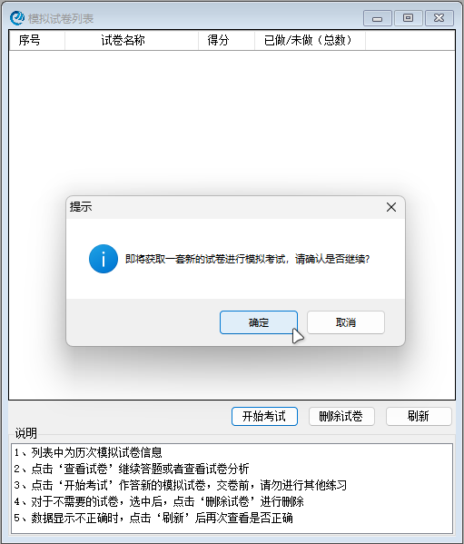
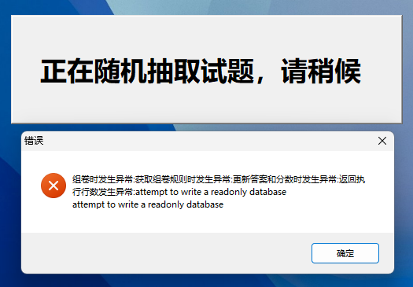

在“生成考卷”页面，如要进行模拟考试，需要生成考卷

生成考卷
但是有可能会出现报错，报错信息如下：

报错信息
分析报错信息可知：数据库文件被设为只读，程序没有写入权限。
这是因为联系系统程序被安装在了 “C:\Program Files\” 目录下，而该目录的权限设置默认是只读的（尤其是在WIndows10及以上系统，权限更严格），导致程序无法写入数据库文件。
以上三种方法任选一种即可，建议重新安装。
其实这一部分在 1.1 软件安装 已经有提及，并且该问题仅在Windows10及以上系统才会出现，Windows7用户可忽略。
（本章节结束）[下一章节]